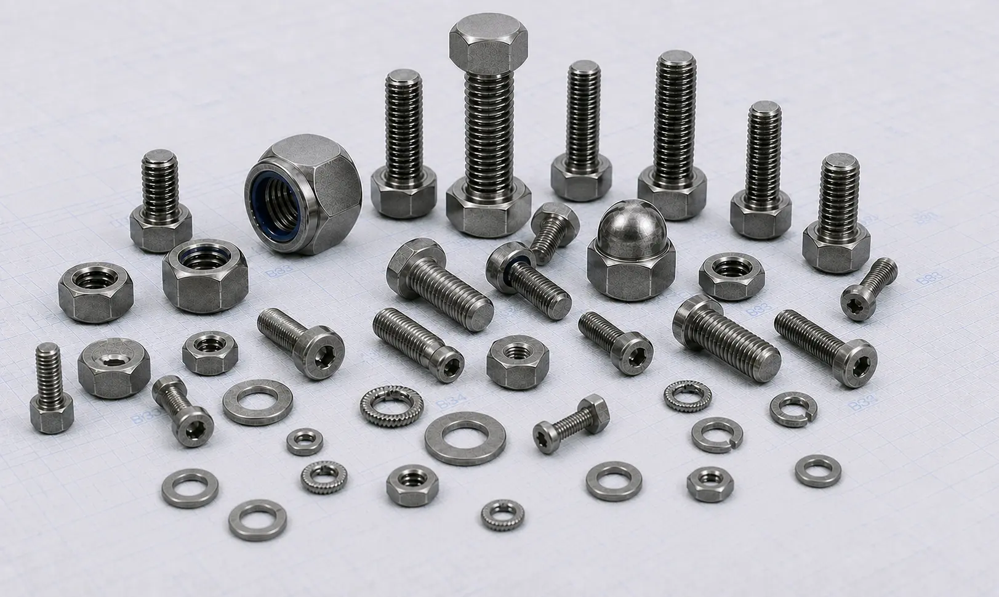

Hastelloy C22 Fasteners manufacturer in India supplying bolts, nuts, stud bolts, washers, and anchor bolts for chemical processing, pollution control, marine, pharmaceutical, and industrial applications.
Hastelloy C22 Fasteners are high-performance nickel-chromium-molybdenum alloy fasteners known for their exceptional resistance to oxidizing and reducing chemicals. Designed for use in highly corrosive environments, these fasteners provide excellent protection against pitting, crevice corrosion, stress corrosion cracking, and chemical attack. As a trusted Hastelloy C22 Fasteners Manufacturer in India, we supply precision-engineered fastening solutions for chemical processing, pollution control, marine, pharmaceutical, and power generation industries.
Our range includes Hastelloy C22 bolts, nuts, stud bolts, anchor bolts, washers, hex bolts, hex nuts, U bolts, and socket head bolts manufactured to international standards and customer specifications.

Hastelloy C22 (UNS N06022) is a versatile nickel-based alloy developed to provide outstanding corrosion resistance across a wide variety of aggressive process environments. The alloy contains significant amounts of chromium, molybdenum, and tungsten, allowing it to withstand both oxidizing and reducing media while maintaining excellent mechanical properties.
As a premium grade within the broader range of Nickel Alloy Fasteners, Hastelloy C22 Fasteners are commonly specified for applications involving corrosive chemicals, chlorides, acids, and process fluids where long-term reliability is essential.
| Property | Details |
|---|---|
| Grade | Hastelloy C22 / UNS N06022 |
| Standards | ASTM F467, ASTM F468 |
| Product Types | Bolts, Nuts, Stud Bolts, Anchor Bolts, Washers |
| Sizes | M3 to M100 and Custom Sizes |
| Thread Type | Metric, UNC, UNF, BSW |
| Forms | Hex Bolts, Hex Nuts, Stud Bolts, U Bolts, Socket Head Bolts, Washers |
| Certification | Mill Test Certificates Available |
Hastelloy C22 bolts are widely used in chemical plants, process equipment, and industrial systems where superior corrosion resistance and mechanical reliability are required. These fasteners perform exceptionally well in aggressive operating environments.
Manufactured for secure fastening performance, Hastelloy C22 nuts provide excellent resistance to chemical attack and corrosion. They are commonly used in pressure vessels, reactors, pumps, and industrial processing equipment.
Hastelloy C22 stud bolts are extensively used in flanged piping systems, heat exchangers, pressure vessels, and chemical processing facilities where dependable sealing and corrosion resistance are critical.
Our Hastelloy C22 washers and anchor bolts help ensure secure installations and proper load distribution in corrosive industrial environments while supporting long-term operational reliability.
Hastelloy C22 offers outstanding resistance to a broad range of oxidizing and reducing chemicals. This makes it suitable for highly aggressive environments where conventional stainless steel fasteners may not provide adequate performance.
The alloy performs exceptionally well in chloride-containing environments and provides excellent protection against localized forms of corrosion that can compromise fastening integrity.
Hastelloy C22 Fasteners are capable of handling a wide range of acids, chlorides, solvents, and industrial chemicals, making them a versatile solution for process industries.
The alloy maintains its mechanical properties and corrosion resistance at elevated temperatures, making it suitable for demanding industrial service conditions.
Its ability to resist corrosion and environmental degradation helps reduce maintenance requirements, equipment downtime, and replacement costs.
| Element | Percentage (%) |
|---|---|
| Nickel | Balance |
| Chromium | 20.0 – 22.5 |
| Molybdenum | 12.5 – 14.5 |
| Iron | 2.0 – 6.0 |
| Tungsten | 2.5 – 3.5 |
| Cobalt | Max 2.5 |
| Manganese | Max 0.5 |
| Carbon | Max 0.015 |
| Property | Value |
|---|---|
| Tensile Strength | 690 MPa Min |
| Yield Strength | 310 MPa Min |
| Elongation | 45% Min |
| Density | 8.69 g/cm³ |
| Melting Range | 1357 – 1400°C |
Hastelloy C22 Fasteners are extensively used in reactors, pressure vessels, storage tanks, and piping systems handling aggressive chemicals and corrosive process fluids.
The alloy performs exceptionally well in flue gas desulfurization systems, scrubbers, waste treatment facilities, and environmental control equipment exposed to corrosive media.
These fasteners are widely used in pharmaceutical processing equipment and specialty chemical manufacturing facilities where corrosion resistance and product purity are essential.
Hastelloy C22 Fasteners provide dependable performance in marine environments exposed to chlorides, seawater, and harsh atmospheric conditions.
Power plants utilize Hastelloy C22 fasteners in critical equipment requiring resistance to corrosive environments and elevated operating temperatures.
| Industry Requirement | Benefit of Hastelloy C22 |
|---|---|
| Corrosion Resistance | Excellent protection against aggressive chemicals |
| Equipment Reliability | Consistent performance in critical applications |
| Pitting Resistance | Withstands localized corrosion in chloride environments |
| Long Service Life | Reduced maintenance and replacement frequency |
| Process Safety | Reliable material integrity under demanding conditions |
Hastelloy C22 Fasteners are widely selected for industries where equipment is exposed to corrosive chemicals, chlorides, acids, and process fluids. Their ability to resist both oxidizing and reducing environments helps improve operational reliability and reduce the risk of premature fastener failure.
Projects requiring broader resistance to severe corrosive chemicals may also consider Hastelloy C276 Fasteners. While both grades offer exceptional corrosion resistance, Hastelloy C22 is particularly known for its resistance to oxidizing environments and localized corrosion, whereas Hastelloy C276 is widely selected for handling a broader range of aggressive chemical process conditions.
As a trusted supplier of Hastelloy C22 Fasteners, we provide bolts, nuts, stud bolts, anchor bolts, and washers in a wide range of sizes and specifications. Our products support EPC contractors, OEM manufacturers, chemical processing companies, and industrial buyers seeking dependable fastening solutions for corrosive service environments.
We focus on product quality, technical support, and timely delivery to meet the requirements of critical industrial applications worldwide.
Quality remains an integral part of our manufacturing and supply process. All Hastelloy C22 Fasteners undergo inspection for dimensional accuracy, thread quality, material integrity, and compliance with applicable standards before dispatch.
As an ISO Certified Company, we are committed to delivering fastening solutions that meet industry requirements while maintaining consistency, reliability, and long-term performance in demanding chemical processing, marine, and industrial applications.
Choosing the right fastener material is important for ensuring long-term performance in corrosive and demanding service conditions. Factors such as chemical exposure, temperature, and operating environment can influence material selection. Our team can help you select suitable Hastelloy C22 bolts, nuts, stud bolts, anchor bolts, and washers based on your project requirements and application needs.